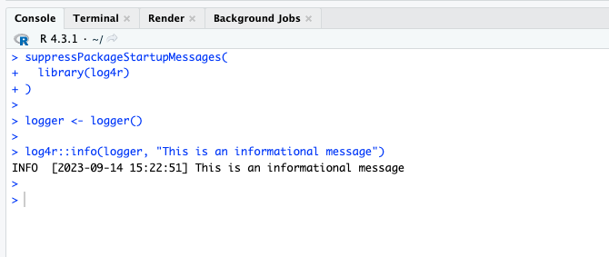

suppressPackageStartupMessages(
library(log4r)
)
logger <- logger()
log4r::info(logger, "This is an informational message")INFO [2023-09-22 15:31:37] This is an informational messageSo far, we have discussed:
Now, we will dive into looking at logs beyond your Console in the RStudio IDE. Logs are more useful when they’re accessible for review, whether that is in some local .log file, or if it’s stored in the cloud through a service like Azure Monitor or AWS CloudWatch. Both options are perfect solutions, depending on what you are looking for, and what resources you have available.
In our previous example, when we ran our logging code, it would print it out in the Console.
suppressPackageStartupMessages(
library(log4r)
)
logger <- logger()
log4r::info(logger, "This is an informational message")INFO [2023-09-22 15:31:37] This is an informational messageI’ll further illustrate this with a screenshot of my IDE running the same code:

It would be nice to have these logging messages inside a logging file you can review. This is especially true if you’re running your code not in an IDE, but on some separate system where code isn’t being run interactively.
We can go beyond logging to the console by using an appender. Appenders are a common feature in logging packages, and in log4r, they are used to determine the destination of the logging output. log4r has four different appenders:
file_appender for writing to an external filesyslog_appneder for writing to a system log on Linux, Mac, or other Unix-based OShttp_appender for sending the log that accepts HTTP requests (like an API)tcp_appender for writing to a TCP connection (over a network, maybe a localized logging storage system like Splunk).I will review file_appender and syslog_appender
file_appenderLet’s use our previous example, and modify it to use a file_appender
suppressPackageStartupMessages(
library(log4r)
)
file <- "log.txt"
logger <- logger(appenders = file_appender(file = file))
log4r::info(logger, "This is an informational message to be sent to my log.txt file")Running this chunk above will not output anything in the console. It will instead start writing to your log.txt file.
$ cat log.txt
INFO [2023-09-14 15:37:39] This is an informational message to be sent to my log.txt fileIf you do need an option to write to the log file and another appender, you can create a list of appenders:
logger <- logger(appenders = c(console_appender(), file_appender(file = file)))
log4r::info(logger, "This is an informational message that should append to my Console and file")INFO [2023-09-22 15:31:37] This is an informational message that should append to my Console and fileWhich will print to the Console, and also in our log.txt file.
$ cat log.txt
INFO [2023-09-14 15:37:39] This is an informational message to be sent to my log.txt file
INFO [2023-09-14 15:37:41] This is an informational message that should append to my Console and fileBy using the file_appender, you can start to keep track of logging events
syslog_appenderWhen you use file_appender, those logs remain wherever they are stored. This can be inconvenient if you are trying to access those log files, and it’s on a production system or some other machine you don’t easily have access to (who wants to log into another machine just to view logs?)
Using syslog_appender can make accessing logs more convenient because it will be stored in a centralized location with other logs. And typically, your IT department may already be collecting logs from the system’s syslog.
Syslog is a messaging protocol, and logging events from various software processes on the system will write to a syslog file, typically in /var/log/syslog on *nix-based systems.
If you have used Ubuntu or similar Linux OS, you should be able to find your syslog file. We will not cover Mac or Windows for now.
Syslog is a convenient location to store logs because:
syslog files that can enhance your logging capability (Azure Log Analytics, AWS CloudWatch)So let’s dive into syslog_appender
syslog_appenderTo use syslog_appender, we first also need rsyslog. See the log4r vignette “Logging Beyond Local Files” for more information.
suppressPackageStartupMessages({
library(rsyslog)
library(log4r)
})
logger <- logger(appenders = syslog_appender("my-syslog-example"))
log4r::info(logger, "This is an informational message to be sent to syslog")Using the code above, you should see an entry in your syslog file. Here’s a Posit Community thread that gives an example of using log4r and writing to syslog.